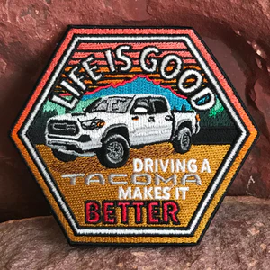

Lab 6 - Objects and Arayes
Arayes are like tacos, arrays-arayes, Toyota tacoma.... taco...ma
Challenge
Working with your partner, experiment with JavaScript arrays and objects.
Problems
For the longest time, I couldn't figure out what was the issue with uploading my images to Github but I think now I figured that it must have to do with the file pathways of my screenshot folders that are preventing my uploads.
Reflection
Together we trusted each other to do our work on the individual website and swap codes to check for errors and formatting inconsistencies. Learning about objects and arrays were intuitive due to building off the last assignment where we also had to code information about cars. After working on our websites and consulting with each other when we struggled, we gave each other detailed feedback about each other’s code and website design. The organization and formatting of objects and arrays became clear in this lab and it was a helpful reminder that arrays begin with 0.